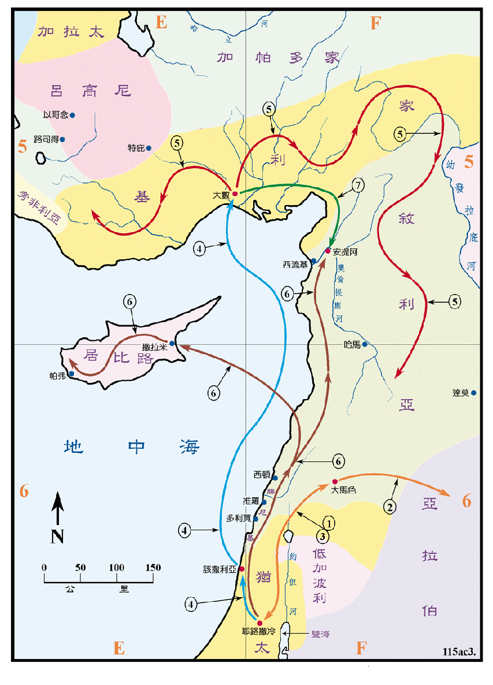

约是主后32至46年之间

行动线说明
| 序号 | 圣经 | 说明 |
|---|---|---|
| 徒7:58-60 | 司提反被石头打死之时，扫罗也在场，并且也喜悦司提反被害。 | |
| 1 | 徒9:1-22 | 扫罗在去大马色的路上，主向他显现。蒙召后在大马色一带工作。 |
| 2 | 加1:17 | 扫罗往亚拉伯去寻求。 |
| 3 | 徒9:23-29，加 1:18 | 三年后扫罗在大马色受到逼迫，就回到耶路撒冷，奉主名传道。 |
| 4 | 徒9:30 | 扫罗又在耶路撒冷受到威胁，就经该撒利亚回到故乡大数。 |
| 5 | 加1:21 | 扫罗到叙利亚和基利家传道，并建立教会，约有十一年。 |
| 6 | 徒11:19-21 | 四散的门徒直走到腓尼基、居比路和安提阿传讲主耶稣。 |
| 7 | 徒12:22-26 | 耶路撒冷教会打发巴拿巴到安提阿去劝勉众人，又到大数去把扫罗找到后带回安提阿，一同工作了一年。 |
扫罗原本是一个热心逼迫基督徒的法利赛犹太人，他的归主对他自己和教会都是一个重要的转捩点，归主后他先在大马色停留了三年，就受到生命的威胁而逃走，回到耶路撒冷之后不久，又有人想要杀他，他就回他的故乡大数去，他在大数的四邻，就是叙利亚和基利家两个大省份中传道约有十一年，圣经对这十一年中的细节并没有记载，但是这在保罗三十馀年的传道生涯中足足占了三分之一的时间，他在这两个地区建立了许多教会，这可以从使徒行传十五章四十一节中看出，成果是相当的辉煌。其他的门徒同时期中也到腓尼基、居比路和安提阿传道，这都是在犹太本地以外传扬福音的开始。